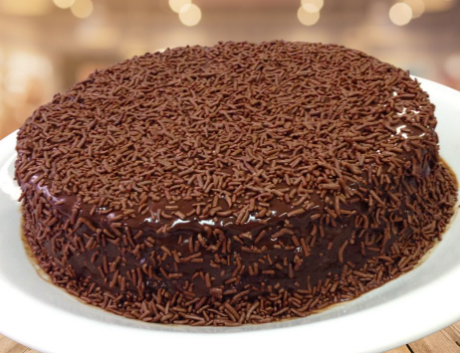

-3 ovos -açúcar 1 e 1/2 xícara (chá) de açúcar -2 xícaras (chá) de farinha de trigo 1 xícara (chá) de chocolate em pó ou achocolatado -óleo 1/2 xícara (chá) de óleo -1 colher (sopa) de fermento em pó -1 pitada de sal -1 xícara (chá) de água quente
Por: Maria Keks